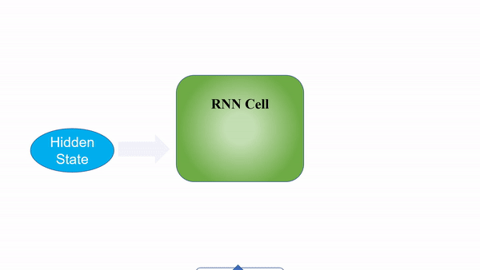
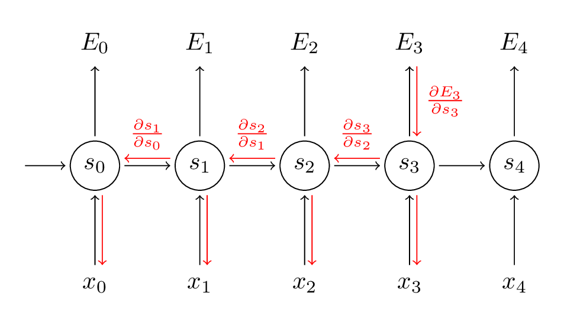

13 Recurrent Neural Networks
Contents
13 Recurrent Neural Networks¶
Recurrent Neural Networks(RNNs) have been the answer to most problems dealing with sequential data and Natural Language Processing(NLP) problems for many years, and its variants such as the LSTM are still widely used in numerous state-of-the-art models to this date. In this post, I’ll be covering the basic concepts around RNNs and implementing a plain vanilla RNN model with PyTorch to generate text.
Video: RNN guide
Video: RNN VS CNN
Basic Concepts¶
What exactly are RNNs? First, let’s compare the architecture and flow of RNNs vs traditional feed-forward neural networks.
The main difference is in how the input data is taken in by the model.
Traditional feed-forward neural networks take in a fixed amount of input data all at the same time and produce a fixed amount of output each time. On the other hand, RNNs do not consume all the input data at once. Instead, they take them in one at a time and in a sequence. At each step, the RNN does a series of calculations before producing an output. The output, known as the hidden state, is then combined with the next input in the sequence to produce another output. This process continues until the model is programmed to finish or the input sequence ends.
Still confused? Don’t anguish yet. Being able to visualize the flow of an RNN really helped me understand when I started on this topic.

As we can see, the calculations at each time step consider the context of the previous time steps in the form of the hidden state. Being able to use this contextual information from previous inputs is the key essence to RNNs’ success in sequential problems.
While it may seem that a different RNN cell is being used at each time step in the graphics, the underlying principle of Recurrent Neural Networks is that the RNN cell is actually the exact same one and reused throughout.
Processing RNN Outputs?¶
You might be wondering, which portion of the RNN do I extract my output from? This really depends on what your use case is. For example, if you’re using the RNN for a classification task, you’ll only need one final output after passing in all the input - a vector representing the class probability scores. In another case, if you’re doing text generation based on the previous character/word, you’ll need an output at every single time step.

This is where RNNs are really flexible and can adapt to your needs. As seen in the image above, your input and output size can come in different forms, yet they can still be fed into and extracted from the RNN model.

For the case where you’ll only need a single output from the whole process, getting that output can be fairly straightforward as you can easily take the output produced by the last RNN cell in the sequence. As this final output has already undergone calculations through all the previous cells, the context of all the previous inputs has been captured. This means that the final result is indeed dependent on all the previous computations and inputs.

For the second case where you’ll need output information from the intermediate time steps, this information can be taken from the hidden state produced at each step as shown in the figure above. The output produced can also be fed back into the model at the next time step if necessary.
Of course, the type of output that you can obtain from an RNN model is not limited to just these two cases. There are other methods such as Sequence-To-Sequence translation where the output is only produced in a sequence after all the input has been passed through. The diagram below depicts what that looks like.
Inner Workings¶
Now that we have a basic understanding and a bird’s eye view of how RNNs work, let’s explore some basic computations that the RNN’s cells have to do to produce the hidden states and outputs.
In the first step, a hidden state will usually be seeded as a matrix of zeros, so that it can be fed into the RNN cell together with the first input in the sequence. In the simplest RNNs, the hidden state and the input data will be multiplied with weight matrices initialized via a scheme such as Xavier or Kaiming(you can read more on this topic here). The result of these multiplications will then be passed through an activation function(such as a tanh function) to introduce non-linearity.
Additionally, if we require an output at the end of each time step we can pass the hidden state that we just produced through a linear layer or just multiply it by another weight matrix to obtain the desired shape of the result.
The hidden state that we just produced will then be fed back into the RNN cell together with the next input and this process continues until we run out of input or the model is programmed to stop producing outputs.
As mentioned earlier, these computations presented above are just simple representations of how RNN cells do their calculations. For the more advanced RNN structures such as LSTMs, GRUs, etc., the computations are generally much more complicated.
Training and Back-propagation¶
Similar to other forms of neural networks, RNN models need to be trained in order to produce accurate and desired outputs after a set of inputs are passed through.

During training, for each piece of training data we’ll have a corresponding ground-truth label, or simply put a“correct answer” that we want the model to output. Of course, for the first few times that we pass the input data through the model, we won’t obtain outputs that are equal to these correct answers. However, after receiving these outputs, what we’ll do during training is that we’ll calculate the loss of that process, which measures how far off the model’s output is from the correct answer. Using this loss, we can calculate the gradient of the loss function for back-propagation.
With the gradient that we just obtained, we can update the weights in the model accordingly so that future computations with the input data will produce more accurate results. The weight here refers to the weight matrices that are multiplied with the input data and hidden states during the forward pass. This entire process of calculating the gradients and updating the weights is called back-propagation. Combined with the forward pass, back-propagation is looped over and again, allowing the model to become more accurate with its outputs each time as the weight matrices values are modified to pick out the patterns of the data.
Although it may look as if each RNN cell is using a different weight as shown in the graphics, all of the weights are actually the same as that RNN cell is essentially being re-used throughout the process. Therefore, only the input data and hidden state carried forward are unique at each time step.
Textual Input Data¶
Unlike humans, neural networks are generally much less proficient at handling textual data. Therefore in most Natural Language Processing (NLP) tasks, text data is usually converted to a set of numbers, such as embeddings, one-hot encodings, etc. such that the network can parse the data better. In our implementation later in this post, I’ll be using one-hot encoding to represent our characters. Therefore I’ll give a brief view of what it encompasses.
As with most machine learning or deep learning projects, data pre-processing more often than not takes up a significant portion of the time of a project. In our example later, we’ll be pre-processing our textual data into a simple representation - one-hot encodings at the character level.
This form of encoding is basically giving each character in the text a unique vector. For example, if our text only contains the word “GOOD”, there are only 3 unique characters and thus our vocabulary size is only 3. We will allocate each unique character a unique vector, where all the items are zero except one at an index assigned to that character. This is how we represent each character to the model.
The output may be something similar as well, where we can take the highest number in the vector and take it as the predicted character.
The output may be something similar as well, where we can take the highest number in the vector and take it as the predicted character.
Hands-On (Time for the code!)¶
We’ve gone through most of the basics of RNNs. While you may still have some concepts that you’re uncertain of, sometimes reading and implementing it in the code may help clear things up for you!
You can run the code we’re using on FloydHub by clicking the button below and creating the project.
In this implementation, we’ll be using the PyTorch library, a deep learning platform that is easy to use and widely utilized by top researchers. We will be building a model that will complete a sentence based on a word or a few characters passed into it.
The model will be fed with a word and will predict what the next character in the sentence will be. This process will repeat itself until we generate a sentence of our desired length.
To keep this short and simple, we won’t be using any large or external datasets. Instead, we’ll just be defining a few sentences to see how the model learns from these sentences. The process that this implementation will take is as follows:
Code: Code with RNN